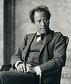
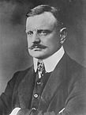

My name is Matt Kostich, I was born July 21st 1992, I'm 25 years old, and a graduate of Southern Connecticut State University with a BA in Music. Along with my passion for music, I have a passion for programming and technology and I'm working hard to make a career as a developer!
My interest in music started when I was young, in the 5th grade. I attended a music workshop for kids and wound up with a trumpet in my hands and I've been playing ever since. My interest in programming started much later, in college. I was first exposed to it through an introduction to programming course (which was in VB). From then on my desire to learn more grew and two years after I was doing web development for University's Office of Residence Life.
For my cool link, I would like to share a resource that I've used numerous times over the years: IMSLP. This site is an online library of scores, parts, and recordings for classicaly oriented musicians.
In the interest of sharing some more about myself (and my passion for the music of dead white guys), below are some of my favorite composers and a little info about them!
My Favorite Composers
| Composer Name | Birthdate | Image |
|---|---|---|
| Gustav Mahler | July 7th, 1860 |  |
| Jean Sibelius | December 8th, 1865 |  |
| Aaron Copland | November 14th, 1900 |